Lab 3 · MSA + SFDC (Salesforce Extension)
Initiating an Agreement Request directly from Salesforce, orchestrating review in Workflow Builder, and categorizing contract risk with Agent Studio.
Before you begin
0.1 · The scenario
At Fontara, Opportunities need to be closed fast, and users daily use Salesforce. Rather than switching contexts or rekeying deal data into separate tools, Docusign Intelligent Agreement Management (IAM) brings agreement orchestration directly into the CRM workflow.
In Lab 2, you saw how Agreement Desk and Agent Studio analyze contract risk. In Lab 3, we bring that entire experience directly to the Salesforce users: from a Salesforce Opportunity, users can submit an MSA document for legal AI agent approval powered by Docusign.
Behind the scenes, deal context flows directly into an Agreement Request, seamlessly handing off to your Lab 2 Vendor and Renewal Risk Analyst agent to evaluate risk and trigger governed approval paths, keeping teams productive in Salesforce while Docusign handles the agreement intelligence.
0.2 · The flow at a glance
Two workflows, one agent
| Layer | Role in this lab |
|---|---|
| Salesforce + Docusign Apps Launcher (DAL) | Where the user already works. The IAM Launcher component starts the intake workflow from the Opportunity; the Embedded Agreement Desk component shows the request status back on the record. |
| Workflow 1 · Intake (new in Lab 3) | Imported from the Lab 3 zip: Start from an API Call → Read from Salesforce → Create a Request → Show a Confirmation Screen. Its only job is to turn a Salesforce record into an Agreement Request. |
| Agreement Desk | The hand-off point. A new request of type Agent Studio 201 - Vendor Contracts starts Workflow 2. |
| Workflow 2 · Risk review (from Lab 2, unchanged) | Execute AI Agent → branch on risk_level → status update and approval routing. |
| Agent Studio | The Vendor and Renewal Risk Analyst agent from Lab 2 reads the MSA and returns structured risk fields. It scores; the workflow decides. |
Salesforce (Record/Opportunity) → Trigger Workflow → Create Agreement Request → Execute Risk Analyst Agent (Agent Studio) → Branch on risk_level (LOW / MEDIUM / HIGH) → Status Update & Approval Routing
0.3 · Learning objectives
Enable SOAP login, install Docusign Apps Launcher, install the Salesforce app in Docusign IAM, link it to the Docusign demo account, and add the IAM Launcher, Embedded Agreement Desk, and Completed Agreements components to the Opportunity page.
Import an intake workflow that starts from an API Call, reads Opportunity data, and creates an Agreement Request.
Reuse the Lab 2 workflow and Risk Analyst agent unchanged, so every entry point gets the same governed risk review.
0.4 · Prerequisites
A Salesforce Developer or Sandbox org, plus the same Docusign IAM (Intelligent Agreement Management) demo environment you used in Lab 2. Synthetic data only, so no production orgs, accounts, or real party data.
0.4.1 · Salesforce org access
setup- An active Salesforce Developer Edition or Sandbox org.
- A user with the System Administrator profile, so you can install managed packages and edit Lightning pages.
- An Opportunity with a related Account you can use for testing. You'll set up three of these in Stage 4.
0.4.2 · Enable SOAP login for Salesforce account
setup- Log in to your Salesforce org as the System Administrator, go to Setup, and type User Interface in Quick Find. You should see the User Interface section.
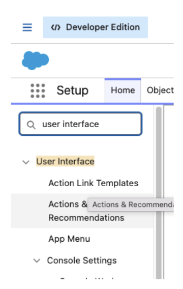
- Scroll to the bottom of the page. You should see the User Interface button. Click it.
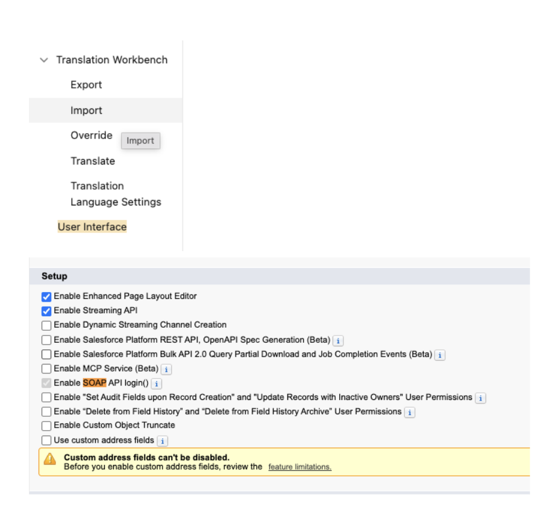
- Scroll to the Setup section of the page, find Enable SOAP API login, check the box, and save the settings.
- Go to Setup, search for Permission Sets, and create a new permission set named
SOAP API Permission set. Click Save. - Open System Permissions in the permission set and click Edit.
- Use Ctrl+F to search for Use Any API Auth, check the box, and save the settings.
- Click Manage Assignments and assign the permission set to the System Administrator user.
0.4.3 · Install Docusign Apps Launcher (DAL)
setup- Log in to your Salesforce org as the System Administrator, then open the package install link in the same browser:
Production / Developer Editionhttps://login.salesforce.com/packaging/installPackage.apexp?p0=04tg8000000LzgPSandboxhttps://test.salesforce.com/packaging/installPackage.apexp?p0=04tg8000000LzgP
- Choose who to install for:
- Install for All Users - recommended for workshop and demo orgs; avoids permission issues later.
- Install for Admins Only - use if your org admin requires it; you then grant access to other users explicitly.
- Tick the acknowledgement, click Install, and approve third-party access if prompted.
- Wait for the confirmation (larger orgs may email you when the install finishes), then click Done.
test.salesforce.com. Using login.salesforce.com from a sandbox session sends you to the production login page and the install fails.0.4.4 · Install Salesforce in Docusign IAM
setup- Access to the Docusign developer demo environment at apps-d.docusign.com, using the same account as Lab 2.
- Agreement Desk, Workflow Builder, and AI Agents enabled, with the permissions set in Lab 2 prerequisites (0.5.2).
- A DS Admin user (same email as your Salesforce admin) to authorize DAL in Stage 1.
- Navigate to Admin.
- Scroll down to the Integrations section and click App Center.
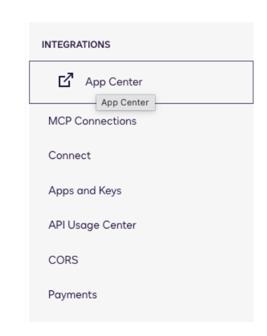
- The App Center opens. Open the Salesforce extension app.
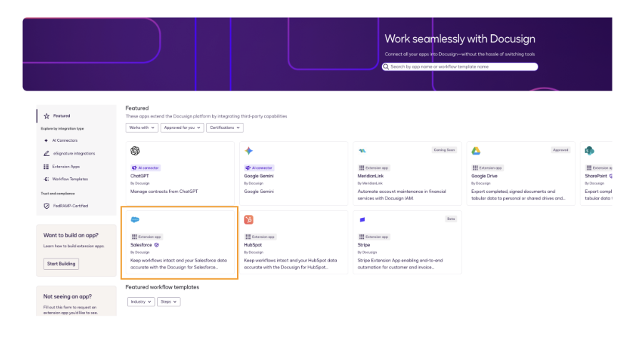
- The Salesforce extension app page opens. Click Install; when the installation window opens, click Install and Authorize.
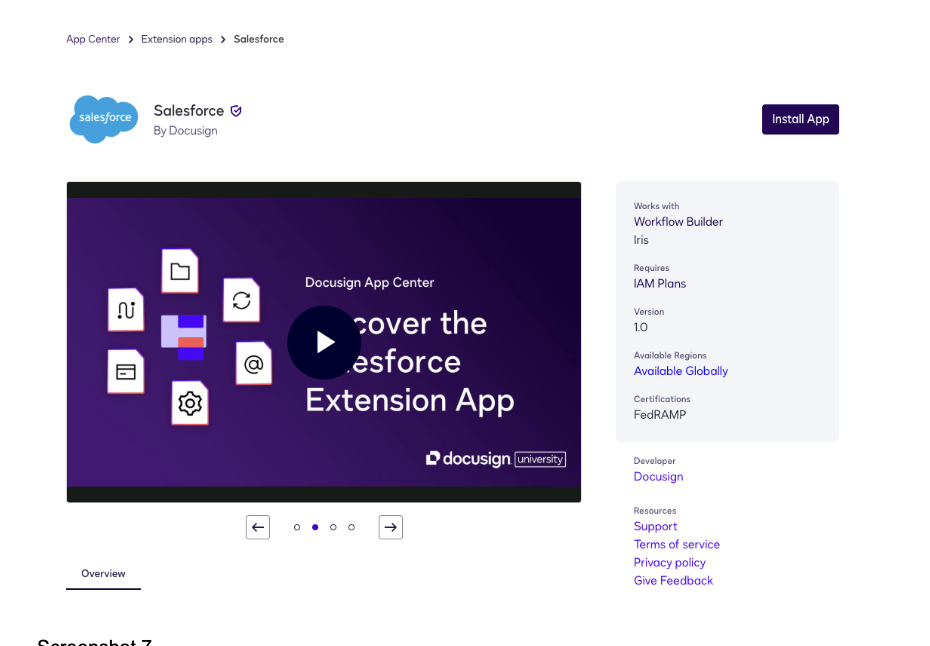
- You'll see a confirmation message at the bottom left of the screen saying the app was successfully installed.
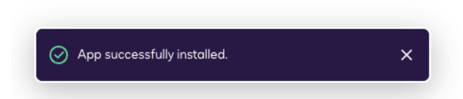
- Once the app is installed, click Connect account.
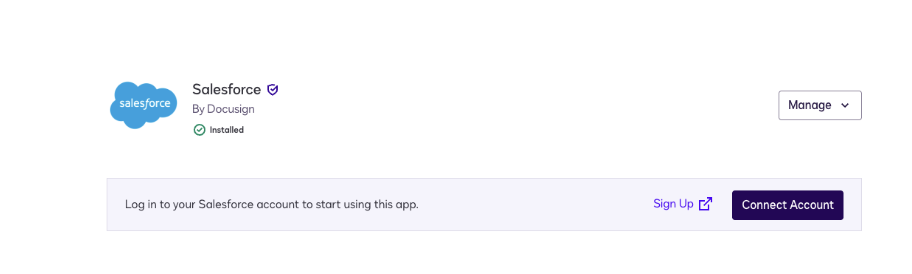
- The connection wizard opens. Select Production account if you are using a Salesforce Developer Edition org, or Sandbox if you are using a sandbox.
- In the next step, select Shared.
- In the next step, give the connection a name and click Login.
- Log in to Salesforce using your Developer Edition credentials.
- Refresh the Docusign App Center page. The app now shows a Manage button.
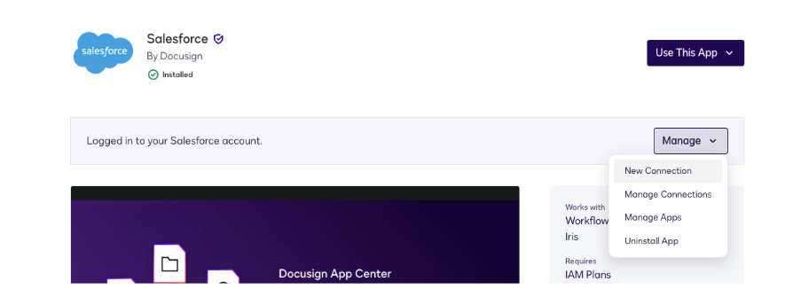
- Once you see Manage, close the App Center page.
0.4.5 · Lab 2 complete
setupLab 3 reuses Lab 2's artifacts as-is. Confirm all of these before you start:
- The Vendor and Renewal Risk Analyst agent is Published (Lab 2 · 1.5).
- The Request Type Agent Studio 201 - Vendor Contracts exists and is active (Lab 2 · 2.1).
- The Lab 2 workflow is Published and starts From Agreement Desk on that Request Type (Lab 2 · 2.2 and 2.5).
- The sample agreements
MSA_low.docx,MSA_medium.docx, andMSA_high.docxare downloaded locally.
Stage 1 · Salesforce Setup & DAL Configuration
Before Salesforce can start anything in Docusign, the two systems need a trusted, two-way connection. This stage verifies the package, links it to your Docusign demo account, and puts the Docusign components on the Opportunity page.
1.1 · Verify the DAL package installation
- In Salesforce, open Setup (gear icon, top-right).
- In Quick Find, search Installed Packages.
- Confirm Docusign Apps Launcher is listed.
- Open the App Launcher (9-dot grid, top-left) and search Docusign Apps Launcher.
1.2 · Authorize and link the Docusign demo account
- In Docusign Apps Launcher, open the Docusign Setup tab and click Allow Access.
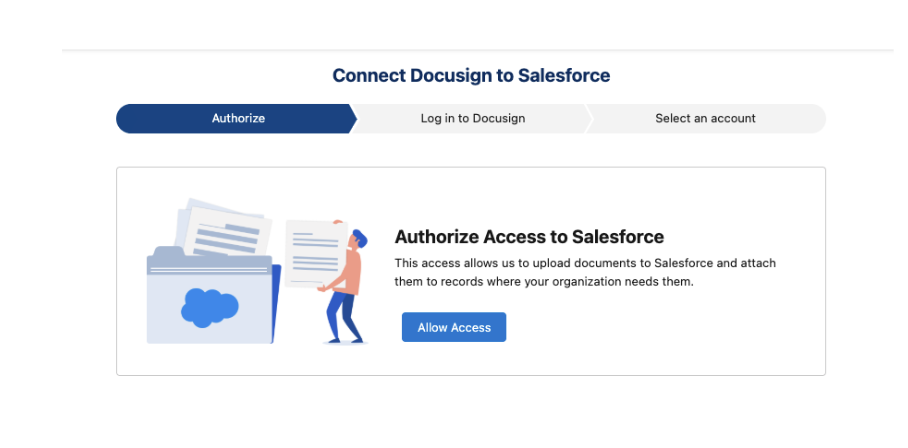
- In the pop-up, sign in with your Salesforce System Administrator credentials.
- Expand Advanced Options and click Log in to Demo Account. This points DAL at the demo environment (
apps-d.docusign.com).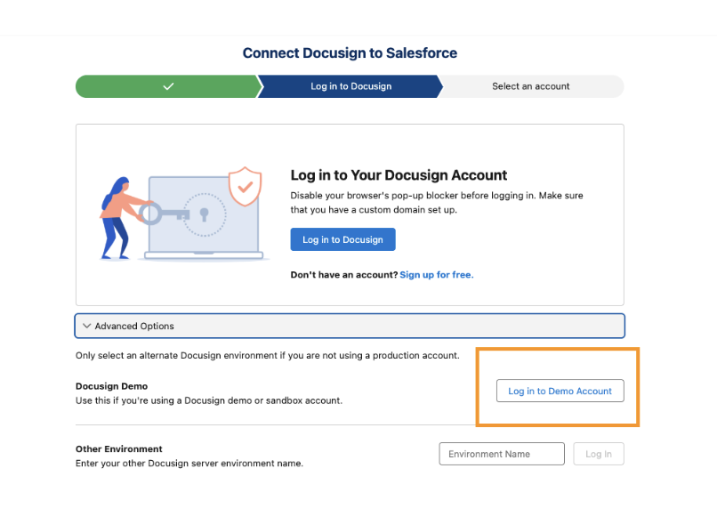
Don't click "Log in to Docusign". That button connects to the Docusign production environment, where your Lab 2 agent and workflow don't exist. Use Advanced Options → Log in to Demo Account. - In the next pop-up, sign in with your DS Admin credentials and click Allow Access.
- Another pop-up asks for your Salesforce System Administrator credentials again. Sign in to complete the two-way connection.
- If your DS Admin user belongs to more than one Docusign account, select the account you used in Lab 2 and click Next.
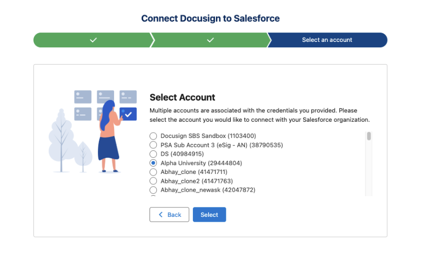
- Once everything is successful, the Docusign Apps Launcher home page opens.
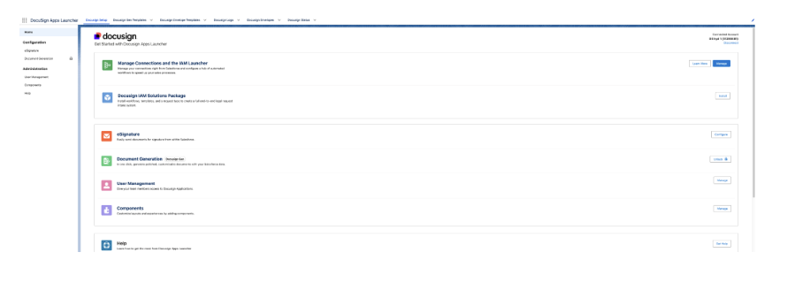
- Click Manage beside Manage Connections and the IAM Launcher.
- A wizard will open. If you don't see the shared connection, create a new connection.
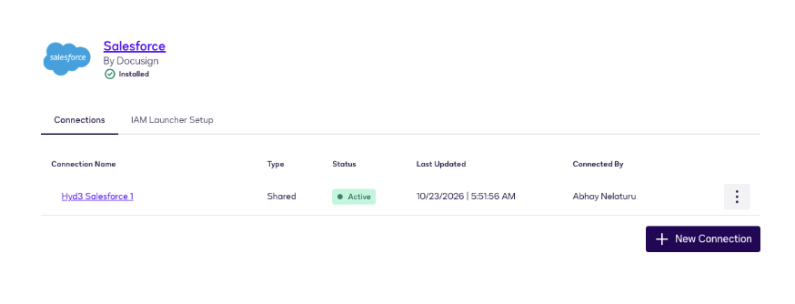
- (Optional) Once done, navigate to the IAM Launcher Setup tab and click the Create button.
1.3 · Enable users
- On the Docusign Setup tab, go to User Management and click Manage.
- Make sure every Salesforce user who will launch the workflow is enabled as an eSignature Administrator or eSignature User. To add someone, click Add Users, select them, and click Add Users again.
1.4 · Add the Docusign components to the Opportunity page
Three components do the work in Salesforce: Docusign IAM Launcher starts Workflow Builder workflows from the record, Docusign Embedded Agreement Desk shows that record's Agreement Requests, and Docusign Completed Agreements shows its completed agreements.
- Open any Opportunity, click the gear icon, and choose Edit Page.
- Click the tab row on the page. In the Tabs panel, click Add Tab.
- Click the new tab, set Tab Label to Custom, and enter the custom label Workflows. Click Done.
- Click the new Workflows tab on the canvas. In the component search box on the left, type Docusign and drag Docusign IAM Launcher onto the tab.
- Repeat steps 2 to 4 to add a tab labelled Agreement Desk Requests containing Docusign Embedded Agreement Desk.
- Repeat steps 2 to 4 to add a tab labelled Agreement Manager and drag and drop Docusign Completed Agreements onto it.
- Click Save. If prompted, click Activate and assign the page as the org default for Opportunity.
Stage 2 · Workflow Builder Trigger Configuration
Import Workflow 1, the intake workflow. It's short on purpose: it reads the Opportunity, creates an Agreement Request, and confirms. It doesn't call the agent. Creating the request is what hands off to Lab 2's workflow.
2.1 · Import the workflow
- In apps-d.docusign.com, open the Agreements tab and go to Workflows.
- Click Create Workflow, choose New Canvas, and click Import.
- Upload the Lab 3 workflow zip file,
MSA Request (simple).zip, from the Lab 3 folder of the labs kit. Leave the file zipped.
2.2 · Publish the workflow
- Click Review & Publish and name the workflow:
Agent Studio 201 - SFDC MSA Intake
- Click through Next, then Publish. If prompted, click Authorize My Account.
Stage 3 · Hooking up the Agent Studio Risk Analyst Agent
There's nothing new to build here. The Vendor and Renewal Risk Analyst already lives in the Lab 2 workflow. This stage confirms the hand-off.
3.1 · How the hand-off works
conceptThe Lab 2 workflow starts From Agreement Desk whenever a request of type Agent Studio 201 - Vendor Contracts is created. It doesn't matter whether that request was submitted in Agreement Desk or created by the Salesforce intake workflow; both start the same risk review.
That's the design point: one governed agent and one routing policy, reached from as many front doors as you need.
3.2 · Verify the Lab 2 workflow
- Go to Agreements → Workflows and open the Lab 2 workflow.
- Confirm it's Published, not Draft.
- Click the Start workflow step and confirm it's From Agreement Desk with Request Type Agent Studio 201 - Vendor Contracts.
- Click Execute AI Agent and confirm it uses your published
Vendor and Renewal Risk Analystwith the prompt:Extracts key terms from the attached document and classify the risk.
Stage 4 · End-to-End Test & Validation
Run the whole loop from Salesforce and follow the request through both workflows.
4.1 · Launch the workflow from Salesforce
- Open (or create) an Opportunity whose Account name matches the sample document: Keranos Digital Media (LOW), Pine Care (MEDIUM), or DataVault Dynamics (HIGH). Start with Keranos Digital Media.
- Click the Workflows tab (IAM Launcher component).
- The first time only: click Add Workflow, select Agent Studio 201 - SFDC MSA Intake, and click Add Selected.
- Click Start on the workflow.
4.2 · Complete and submit the request
- Check that Opportunity ID, Vendor Name, Annual Revenue, Billing State, and Amount are prefilled from the Opportunity.
- Enter your name as Requestor Name.
- Upload the matching sample, starting with
MSA_low.docx. - Click Submit and confirm the confirmation screen appears. Close the tab to return to the Opportunity.
4.3 · Confirm the Agreement Request and both workflow runs
- In apps-d.docusign.com, go to Agreements → Requests and open the new request. Confirm the MSA is attached.
- Go to Agreements → Workflows. Open Agent Studio 201 - SFDC MSA Intake and click View Workflow Runs; the latest run should be complete.
- Do the same for the Lab 2 workflow. A new run should have started when the request was created.
4.4 · Observe risk classification & conditional routing
Repeat 4.1 to 4.3 for each sample and compare against the expected outcome:
| Opportunity Account | Sample | Expected risk_level | Expected routing |
|---|---|---|---|
| Keranos Digital Media | MSA_low.docx | LOW | Request status → Approved |
| Pine Care | MSA_medium.docx | MEDIUM | Owner → Legal, message sent, status → Pending Legal Review |
| DataVault Dynamics | MSA_high.docx | HIGH | Owner → Legal, message sent, status → Pending Legal Review |
risk_level. Back in Salesforce, the Agreement Desk Requests tab shows the updated status.4.5 · Validation checklist
- Salesforce / DAL: packages installed; connected to the demo account; Workflows and Agreement Desk Requests tabs on the Opportunity.
- Workflow 1 (intake): published; starts from an API Call; reads the Opportunity; creates exactly one request of the Lab 2 type per launch; no agent step.
- Workflow 2 (Lab 2): published; starts on each new request; both branches reachable.
- Agent: the same published Lab 2 agent;
risk_levelalways LOW, MEDIUM, or HIGH; all five outputs populated.
4.6 · Troubleshooting & guardrails
Common issues
| Symptom | Likely cause and fix |
|---|---|
| DAL authorization pop-up never appears | Browser pop-up blocker. Allow pop-ups for your Salesforce domain and retry. |
| DAL connection fails or links the wrong account | Salesforce and Docusign admin emails don't match, or Log in to Docusign (production) was clicked. Fix the email and reconnect using Log in to Demo Account. |
| Your workflow isn't listed under Add Workflow | It isn't published, or DAL is connected to a different Docusign account. |
| A Salesforce step has no Salesforce icon (often after importing a workflow) | The step lost its connection and can fail even if the fields look mapped. Delete it and recreate it. |
| "Module metadata is undefined" when saving, or a page-not-found error when running | The workflow references a Request Type that doesn't exist in this account. Request Types aren't included in workflow exports; create it first, then reselect it. |
| Request created, but no Lab 2 run | The Lab 2 workflow is still a Draft, or its trigger points at a different Request Type. |
Salesforce steps fail with consent_required | Consent was revoked. Re-publish and click Authorize My Account, or ask your facilitator to re-grant consent. |
Design guardrails
- One agent, one place. The intake workflow creates requests; only the Lab 2 workflow runs the agent.
- The agent scores, the workflow decides. Routing stays deterministic and auditable in Workflow Builder.
- Humans in the loop. Only LOW is automated; MEDIUM and HIGH always reach Legal.
- Fail closed. If the agent can't read the document, it returns HIGH and the request goes to review, never to signature.
Recap
A seller clicked Start on a Salesforce Opportunity → the intake workflow read the Account from Salesforce and created an Agreement Request with the MSA → that request started the Lab 2 workflow → the Risk Analyst agent read the contract and returned structured risk fields → deterministic branching approved LOW risk and routed MEDIUM/HIGH to Legal → the status showed up back on the Opportunity. Same agent, new front door: the work starts where your users already are, and the governance stays inside Docusign IAM.
Reuse the pattern
Any system that can create an Agreement Request can feed the same risk review: another Salesforce object, Microsoft Dynamics, a web form, or an API call. Add a small intake workflow per entry point and keep one agent and one routing workflow behind them all.